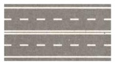
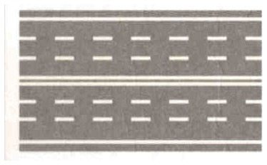
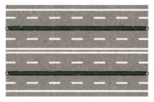
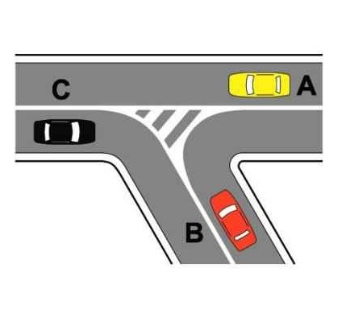
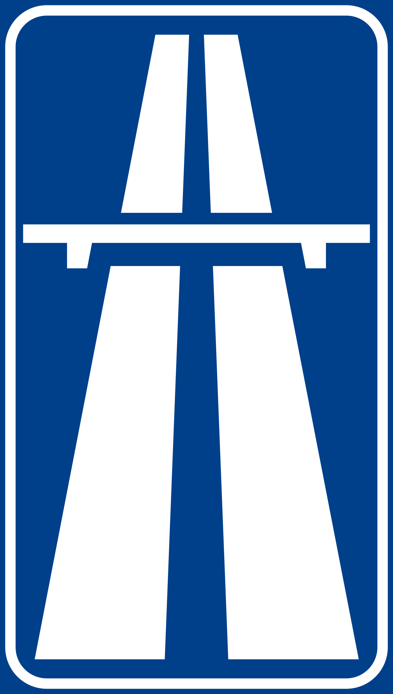
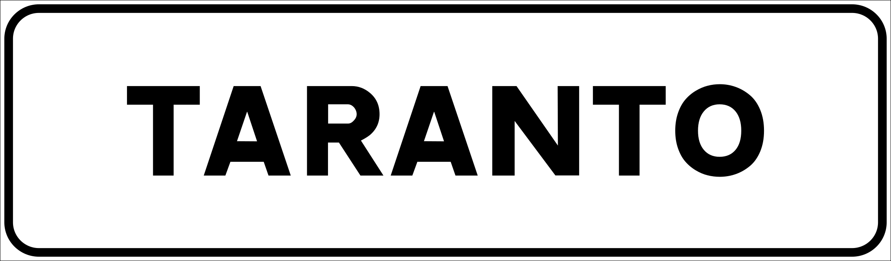
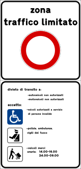
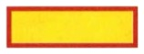
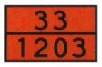
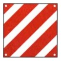

What this topic covers
This is the vocabulary and classification topic, plus the driver's general duties. It defines the parts of the road, the types of road and junction, and the categories of vehicle. It also sets out how a driver must behave, with particular care toward vulnerable road users. Learn the definitions precisely. Many questions turn on a single word or number.
Parts of the road
- The road (strada) is a public-use area for the movement of vehicles, pedestrians, and animals. It can include the carriageway, lanes, shoulders, sidewalks, and bike paths. A paved area not meant for travel, like a parking lot, is not a road. A road can be divided into one or more carriageways.
- The carriageway (carreggiata) is the part of the road that vehicles drive on. It is for driving, so a statement calling it a place meant for parking, for trucks or for emergency stops is false. In town you nevertheless park on it, at its right edge, and both facts hold at once. It includes the pedestrian and bicycle crossings that cross it, but not the sidewalk, the shoulder, a bike path alongside, or the autostrada emergency lane. Pull-offs (piazzole di sosta) are outside it too.
- A lane (corsia) is a part of the carriageway just wide enough for a single file of vehicles going one way, marked off by lines. A narrow two-way country road is a single carriageway, not one two-way lane. The lines may be continuous or broken.
- Besides ordinary and overtaking lanes, a lane can be an acceleration or deceleration lane, an emergency lane, a reserved lane (taxis, buses), or a specialized turning lane, and the road's owning authority can even set a mandatory minimum speed for a lane. A lane can also be forbidden to certain types of vehicle, which is what a reserved lane does for everyone but the vehicles it is reserved for.
- The acceleration lane is for building up speed before merging, never for overtaking. The deceleration lane is for slowing down to leave the autostrada or enter a service area, never for parking.
- Both lanes exist for the carriageway: the acceleration lane to join it, the deceleration lane to leave it. A pull-off (piazzola di sosta) is a short pull-off area beside the carriageway for stopping, so neither an acceleration nor a deceleration lane is there to serve it.
For US drivers. An Italian area di servizio, the rest area with fuel and a bar, does have its own exit and entry lanes, exactly as a US rest area does. A piazzola di sosta is a different and much smaller thing: a pull-off scraped out beside the road for a brief stop, with no ramps of its own.
- A lane is never two-way, and two riders may not travel side by side in one lane.
- A bike path (pista ciclabile) is a lane reserved for bicycles. It is part of the road but not part of the carriageway. A bike crossing (attraversamento ciclabile), where it crosses the road, is part of the carriageway, like a pedestrian crossing.
- The emergency lane (corsia di emergenza) is the strip on an autostrada for stopping in a breakdown or emergency. It is for stopping, not driving, so it is not part of the carriageway.
- The shoulder (banchina) is the strip alongside the carriageway, just outside the white edge line that marks the carriageway's outer boundary. It is not part of the carriageway, not normally for driving, and not a parking area.
- The sidewalk (marciapiede) is the raised path at the side of the road, reserved for pedestrians. It is part of the road, but not part of the carriageway.
- Vehicles may park on the sidewalk only where parking stripes are marked on it. The sidewalk does not stop being a sidewalk there. The road authority may mark bays along one part of a wide one, and the rest stays for pedestrians. Being raised, or not being raised, changes nothing, and no class of vehicle has a standing exemption, mopeds included.
- A crosswalk (attraversamento pedonale) is the marked strip where pedestrians cross the lanes. It is marked by white stripes, the "zebra," that run parallel to the direction of vehicle travel. It is part of the carriageway. Vehicles may drive across it, but on the stripes they must yield to pedestrians who are crossing.
- A traffic island (isola di traffico) is a non-drivable area that channels traffic toward set directions. No vehicle may drive, stop, or park on it.
- A safety island (salvagente) is a raised, protected spot in the road where pedestrians can wait safely, such as at a crosswalk or a tram or bus stop. It helps passengers board and get off trams and buses. It does not channel vehicles (that's a traffic island) or divide traffic directions (that's a median), and it is not a person.
- A safety island can be marked by short lighted posts showing a steady yellow light.
- A driveway (passo carrabile) is an authorized access from a public road to a property, typically an adjoining area used for parking.
- A driveway carries an official sign showing the issuing authority and the authorization number.
- You may not park across a driveway. That would block the access. A brief stop (fermata) in front of it, with the driver at the wheel, is allowed.
Carriageways, lanes, and the median
- A carriageway is the part of the road where vehicles drive. It is made up of one or more lanes.
- A carriageway says nothing about direction. A single carriageway can be one-way, or it can carry both directions, with one lane each way divided only by a centerline. The same holds for the road as a whole, which can be one-way or two-way.
What makes a road "a carreggiate separate" (separate carriageways) is a median (spartitraffico). A median is a non-drivable strip down the middle that physically keeps the two directions of traffic apart. It can be a raised curbed island, a guardrail or concrete barrier, or a paved or grass strip you cannot drive across. The median is not part of either carriageway.
So to tell whether a road has one carriageway or two, look for a physical divider, not paint. Markings alone do not count. A double solid centerline still leaves a single carriageway, even though you may not cross it. Only paint separates the directions, and nothing physically stops you. Add a physical median to that same surface and you have two carriageways, one per direction. Between separate carriageways you cannot cross at all, apart from occasional gaps for emergencies or authorized U-turns.


Both of these are a single carriageway. White lines and the plain gap between rows only mark lanes and the two directions, not new carriageways: the three-lanes-each-way road is still one carriageway because nothing physical divides it.

- When you count carriageways in a diagram, count the medians. No median means one carriageway and one median means two. Two medians, as here, mean three.
- On a three-carriageway road the two outer carriageways are normally one-way, one for each direction, and the central carriageway normally carries traffic both ways.
The terms "left lane" and "right lane" are always from the viewpoint of a driver traveling in that direction, not from how the road's image is oriented on a page. For each direction, the right lane (toward the outer edge) is for ordinary driving. The left lane (toward the median) is for overtaking. Where a direction has three lanes, only the right lane is for ordinary driving, and both the center and the left lane are normally for overtaking.
Traffic islands (isola di traffico)

A traffic island is a non-drivable area inside the roadway that channels traffic toward set directions. It usually sits at a junction, where it separates turning traffic from through traffic, or where lanes split. It is heavily tested, so study these points.
- No vehicle may drive, stop, or park on it. That applies to cars, mopeds, taxis, and buses alike.
- It is marked with white chevron (zebra) stripes and bordered by continuous white lines. It can be flush (a raso), which is just paint, or raised (in rilievo), which has a curb and is preceded by the chevrons.
- An arrow sign at the island tells you which side to pass, whether right, left, or either.
- It is part of the road, and it channels traffic. It does not separate the carriageway from the shoulder.
A traffic island is not a safety island (salvagente), a median (spartitraffico), or a parking, pull-off, or U-turn area.
Types of road
The Code sorts roads into types by how they are built, not by how busy they are, and each type fixes who may use it, its speed limit and the color of its direction signs. The four types, from the most protected down, are the autostrada, the main extra-urban road, the secondary extra-urban road and the urban road; each admits different vehicles and carries its own sign color.

- Autostrada. Its carriageways are independent, or separated by a median (spartitraffico), and it has no same-level junctions. Every other road joins or leaves it by a ramp, and no road crosses it at the same level.
- The autostrada has acceleration and deceleration lanes. Vehicles enter by the acceleration lane and leave by the deceleration lane.
- The autostrada has fenced sides.
- Only certain vehicles may use it. It is open to cars, trucks, buses, motorhomes, and motorcycles with at least 150 cm³ of engine displacement (about 9 cubic inches). It is closed to pedestrians, animals, bicycles, mopeds, motorcycles under 150 cm³, light quadricycles (four-wheelers with moped-size limits, defined below), and farm or work vehicles. Any vehicle too slow to keep up is also barred. It has no bike paths, since it is built only for motor vehicles that meet these requirements.
- On an autostrada the direction signs have a green background, and the speed limit is 130 km/h (81 mph).
- It is usually, though not always, a toll road. Examples are the A1 (Milan–Naples, "del Sole"), the A4 (Turin–Trieste), and the A14 (Adriatic).
- Main extra-urban road (strada extraurbana principale). Like an autostrada, it has separate carriageways with no same-level junctions and proper rest areas. These are the fast, non-toll "superstrade." Examples are the FI-PI-LI (Florence–Pisa–Livorno), the SS36 (Milan–Lecco), and the SS131 "Carlo Felice" in Sardinia.
- The main extra-urban road carries the same vehicle restrictions as an autostrada. Pedestrians, bicycles, mopeds, and motorcycles under 150 cm³ are barred.
- On a main extra-urban road the direction signs are blue.
- On a main extra-urban road the limit is 110 km/h (68 mph).
- Like the autostrada, it has acceleration lanes for entering and at least two lanes in each direction. Its definition concerns carriageways, junctions and access, not the shape of the road, so it can have curves and humps, and variable-message panels are optional on it.
- Secondary extra-urban road (strada extraurbana secondaria). This is a single carriageway connecting towns. Unlike an autostrada, it has no access restrictions. Bicycles, mopeds, and pedestrians may use it, with care. Its direction signs are also blue, and the limit is 90 km/h (56 mph). The old state roads are typical examples, such as the SS1 Aurelia and the SS16 Adriatica.

- Urban road (strada urbana). This is a road inside a town (centro abitato, Italy's legal term for the area between the town-entry and town-exit signs; British materials call it a "built-up area"). It is open to all road users, including pedestrians, bicycles, and mopeds. Its direction signs are white, and the limit is 50 km/h (31 mph). The limit is raised to 70 only on an urban through-road. In town, pedestrians and cyclists mix far more with motor traffic, so extra caution is needed.

- Limited-traffic zone (ZTL). A zona a traffico limitato is an area where vehicle access is limited to set hours or to particular categories of users and vehicles. While the limit is in force only authorized vehicles (permit holders, such as residents or deliveries) may enter, and outside the posted hours traffic is normal. The key point is that cars still drive in a ZTL, it just limits which ones.
- A zona a traffico limitato is marked by start and end signs.
For US drivers. The ZTL is Italy's most common tourist fine. The gates are camera-enforced: pass the sign while the zone is active and your plate is photographed. That means one automatic fine per gate, per pass, often arriving by mail months later (rental agencies forward it and add a handling fee). GPS apps will happily route you straight through a ZTL, so in any historic center don't follow the navigator blindly. Watch for the ZTL sign and its hours panel. If your hotel is inside one, stop before the gate and ask the hotel to register your plate: that authorizes you for the stay. Parking garages work the same way, and they can save you. A garage inside a ZTL registers its customers' plates, but that registration is only as good as the attendant who enters it: confirm it explicitly when you arrive and again when you leave. A garage that forgets leaves you with a fine per gate you passed. The flip side is a rescue trick: if you realize you've strayed into a ZTL, park in a garage inside it. Their registration covers your entry, and the only cost of the mistake becomes the parking fee. Reading the gate. The hours panel uses the 24-hour clock, so "0.00–24.00" means always active, giorni feriali means working days, Monday to Saturday, and festivi means Sundays and holidays. Electronic gates add a live display, and it's a false friend: VARCO ATTIVO means the control is on, so do not enter (the camera is fining); VARCO NON ATTIVO means the restriction is suspended and anyone may enter. Read it as "the enforcement is active," never "the gate is open."
- Pedestrian area (area pedonale). A zone closed to vehicles and reserved for people on foot, and not the same as a pedestrian crossing. The pedestrianized core of a historic center is an area pedonale, such as the car-free heart of Siena around its shell-shaped Piazza del Campo, often ringed by a ZTL.
- By law the only vehicles allowed into a pedestrian area are emergency vehicles, bicycles, vehicles serving people with reduced mobility, and, by exception, zero-emission (electric) vehicles small and slow enough to be treated like bicycles where expressly permitted (think an e-bike or a small electric service cart, not an electric car). Mopeds and ordinary cars are not allowed, and a town may add further limits with signs. A bicycle may ride through a pedestrian area, but not along a pedestrian path marked by the blue round sign, which is for people on foot alone. There the cyclist pushes the bicycle.
- A quick test tells a pedestrian area and a ZTL apart: can any car legally drive here? If yes, but only certain ones or only at certain hours, it is a ZTL. If no cars at all, it is a pedestrian area.
Remember that these colors apply only to the direction signs, the ones giving destinations and road numbers. Warning, prohibition, and mandatory signs look the same on every road. And because a single road number can change category from one stretch to the next, always go by the signs you actually see.
Junctions and railroad crossings
- A same-level junction (incrocio a raso) is where roads cross on the same level. It is an ordinary intersection, often controlled by lights or signs, where the flows of traffic actually meet.
- A split-level junction (a livelli sfalsati, also called "grade-separated") keeps the roads at different heights. One road passes over or under the other, and you change roads by ramps, like an autostrada interchange, so the flows of traffic never cross.
- A railroad crossing (passaggio a livello) is where the road crosses railway tracks at the same level.
- A railroad crossing may be protected by full barriers, by half-barriers (semibarriere, which close only half the width on each side), or be unguarded. It may also carry the St. Andrew's cross, distance panels, and an audible device.
- The signal lights of a railroad crossing are flashing red, never yellow, and red means stop because a train is coming.
How vehicles are classified (the numbers)
Here cm³ (cubic centimeters, also written cc) is the engine's displacement, the volume its cylinders sweep. It is the standard measure of engine size. A 50 cm³ engine is very small. The bigger the number, the larger and more powerful the engine.
These cm³ figures are for gasoline (thermal) engines. An electric vehicle has no displacement, so its category is set by power in kilowatts (kW) instead. For example, an electric moped is limited to 4 kW. The power rating likewise decides whether an electric two-wheeler counts as a moped or a motorcycle, and whether it may use an autostrada.
Masses are written in two units. A metric ton (t) is 1,000 kilograms (kg), so 3.5 t and 3,500 kg are the same mass, and the questions use both forms. A metric ton is about 2,200 pounds.
The classes are grouped below from muscle power to motor power, with the unpowered trailers last.
Muscle- and animal-powered vehicles
- Bicycle (velocipede). Under Italian law a bicycle is a vehicle, even though it has no engine. Pedestrians are not vehicles, and neither are the small machines made for children or for people with disabilities, even motorized ones. Bicycles are forbidden on autostrade and main extra-urban roads. No driving license is required.
- Pedal-assist bicycle (bicicletta a pedalata assistita). An e-bike whose motor is at most 0.25 kW and cuts out at 25 km/h is a bicycle (velocipede), not a moped. Like any bicycle, it requires no driving license.
- Animal-drawn vehicle (veicolo a trazione animale). A cart or carriage pulled by animals is a vehicle too. Several signs regulate them: they can be barred by sign, and overtaking them follows the normal overtaking rules. Driving one requires no driving license.
Two- and three-wheelers and quadricycles (not autoveicoli)
- Moped (ciclomotore). A two- or three-wheeler with an engine up to 50 cm³, or up to 4 kW if electric, and a top speed of 45 km/h (28 mph). Not every small two-wheeler is a moped. Mopeds are forbidden on autostrade and main extra-urban roads. It takes the AM license, which can be earned from age 14.
- Light quadricycle (quadriciclo leggero). A four-wheeler with moped limits (gasoline up to 50 cc, or up to 4 kW if electric), and it is treated like a moped, including the ban from autostrade and main extra-urban roads. It too drives on the AM license.
- Motorcycle (motociclo). A two-wheeler of more than 50 cm³ (or more than 4 kW if electric). One class, but two thresholds matter, and they use different measures:
- Road access goes by engine size: under 150 cm³ it is forbidden on autostrade and main extra-urban roads. From 150 cm³ up it may use both. One exception since 2021: from 120 cm³ (6 kW electric) it may use them if the rider is an adult.
- License goes mostly by power: A1 (age 16) up to 125 cm³ and 11 kW, A2 (age 18) up to 35 kW with no size cap, full A for every motorcycle (from age 20 after two years of A2, or from age 24 without any prior motorcycle license).
- Motor tricycle (triciclo). A three-wheeler with symmetrical wheels, meaning they are placed symmetrically about the vehicle's centerline. A motorcycle with a sidecar (carrozzetta) has asymmetrical wheels and remains a motorcycle, not a tricycle. It exceeds at least one of the moped limits: an engine over 50 cm³ (or over 4 kW if electric), or a top speed over 45 km/h. It takes A1 (age 16) up to 15 kW; over 15 kW it takes A and age 21.
- A three-wheeler within the moped limits is not a motor tricycle. It is a three-wheeled moped (ciclomotore a tre ruote), and the Code has no separate class of light tricycle. The three-wheelers therefore split the way the quadricycles do: within the moped limits the vehicle counts as a moped, and above them it is a motor tricycle or a non-light quadricycle.
- Three-wheelers and the signs. In law a motor tricycle belongs with the motorcycles, and a three-wheeled moped with the mopeds, but the signs count wheels. A vehicle with a motor and more than two wheels is treated like a car: the motor-vehicle ban, which shows a car, stops it, and the motorcycle ban lets it pass.
- Non-light quadricycle (quadriciclo non leggero). A four-wheeler with power up to 15 kW. It takes the B1 license (age 16), and a helmet if it has an open body.
- Only the LIGHT quadricycle counts as a moped. The non-light one keeps its own class: B1 from 16, and outside built-up areas it may run at 80 km/h (50 mph), where a moped is held to 45.
The transmission never matters in these definitions: the classes are set by displacement (or power) and speed, not by the gearbox. A moped does not have to be manual, and motorcycles may have automatic transmission.
Motor vehicles (autoveicoli)
The umbrella class for vehicles with an engine and at least four wheels, excluding quadricycles. A motor tricycle (three wheels) and a quadricycle are not autoveicoli, even though they have engines. Motor vehicles may use every type of road, autostrade included.
- Car (autovettura). A motor vehicle for at most nine people including the driver. It drives on the B license (age 18).
- A car may tow a trailer or a small utility trailer (carrello-appendice). The carrello-appendice is registered as part of the car.
- What defines it is the four wheels and the seat count, not the power source, the engine position, the driven wheels or the body. So an electric car is still a car, while an armored vehicle fitted to carry valuables is not one.
- Bus (autobus). A motor vehicle for more than nine people. It takes the D license, a professional category earned after B. A bus is an autoveicolo, but it is not a car, since a car carries at most nine people.
- An articulated bus (autosnodato), the extra-long two-section bus joined by an accordion-style bend in the middle, is one single bus, not a bus towing a trailer.
- Truck (autocarro). A motor vehicle that carries goods, and the people who handle them. Over 3.5 t it takes the C license, a professional category earned after B. Four related autoveicoli exist. The road tractor (trattore stradale) is built only to tow trailers and semi-trailers. Vehicles for specific transport have a permanently fitted body for one kind of load, such as a concrete mixer. Special-use vehicles have permanently fitted equipment, such as a crane truck or an ambulance. Mezzi d'opera are heavy-duty vehicles allowed above the ordinary mass limits, typically for gravel and sand.
- Motorhome (autocaravan), an RV. Note that in Italian camper means the motorhome itself, not a towed camper. It is self-propelled, and it carries and houses at most the number of people in its registration document. Up to 3.5 t it drives on the ordinary B license. It is permanently fitted out for carrying and housing people.
- Everyone on board must stay seated while the motorhome is moving.
Special machines
- Agricultural machine (macchina agricola). A farm vehicle such as a tractor. It can run on wheels or on tracks (a cingoli), tracks being the continuous belts that loop around the wheels so the machine crawls on them, like a tank or a bulldozer. It can be self-propelled or towed.
- An agricultural work machine (macchina agricola operatrice) can carry special equipment for farm operations.
- These are slow vehicles (40 km/h on tires, 15 on tracks), forbidden on autostrade and main extra-urban roads.
- If registered they may use the road to move about, to carry farm produce for farms and forestry businesses, and to carry their workers.
- The machine carries at most three people including the driver.
- Nobody travels standing, neither on the machine nor on its trailer.
- The B license covers agricultural machines, including the exceptional ones; A1 and A2 cover only those within the size and mass limits of the motorcycle class.
- Work machine (macchina operatrice). A self-propelled or towed machine used for work on or beside the road (rollers, loaders, sweepers), not for carrying goods or people.
- A work machine is driven on a B license. An exceptional work machine (macchina operatrice eccezionale), one that exceeds the legal limits of size or mass, needs C1 instead.
- It is slow: 40 km/h on tires and 15 on tracks, so certainly never above 50. It may carry at most three people including the driver, so "four passengers" is always false, and nobody standing.
- A snowplow is a work machine.
- Ordinary ones drive on the B license, never on A, but an exceptional work machine needs a special authorization, not just category B.
Trailers (rimorchi)
- These are engineless and towed.
- Towing one behind a car takes plain B for a light trailer up to 750 kg, or for a heavier one if the whole combination stays within 3.5 t. B96 covers a combination up to 4,250 kg. BE covers a trailer up to 3,500 kg. The fine print is in the Licenses, documents & penalties review.
- Having no engine, a trailer has no muffler.
- A light trailer (rimorchio leggero) has a laden mass up to 750 kg.
- A travel trailer (caravan, roulotte) is a trailer fitted for living, but only when stationary, never while being towed.
- A semi-trailer (semirimorchio) rests part of its weight on the tractor unit and does have brakes.
- Trailers of every kind carry their own lights and plate.
- The small carrello appendice is not a trailer but part of the car; it can be towed by an autoveicolo, never by a road train, an articulated truck or an articulated bus.
Periodic inspection (revisione)
Mopeds, motorcycles, cars, quadricycles, and motorhomes are inspected four years after first registration, and then every two years. It is not every five years. Motor tricycles are inspected on the same schedule.
Marker panels on heavy vehicles


Trucks, trailers, and semi-trailers for goods with a maximum laden mass over 3.5 metric tons must carry retroreflective marker panels at the rear. The panel type tells you what you are following: yellow with diagonal red stripes is a truck, plain yellow with a red border is a trailer or semi-trailer.


Two more panels are about the load, not the vehicle: the orange panel with a hazard code over a substance code marks dangerous goods (ADR), and the red-and-white striped panel marks a projecting load.
Goods trucks, trailers and semitrailers over 3.5 t must carry retroreflective stripes at the rear and along the sides. A lighter truck, a travel trailer or a bus does not have to carry them.
- The colors are fixed: red or yellow at the rear and white or yellow on the sides.
Cars and buses do not carry rear signs with speed figures.
The driver's general duties
A driver must protect their own and others' safety, be courteous, patient, and tolerant, and anticipate others' behavior rather than assume everyone acts correctly. Correct use of the road pairs the written rules of conduct with common prudence, because the rules alone cannot foresee every situation.
That means looking well past the vehicle ahead when you travel in a line, so you read the traffic far down the road.
Never pass a line of waiting vehicles by accelerating sharply and changing lanes again and again.
The driver of a heavy vehicle owes these duties like everyone else, and must not behave in a way that causes annoyance in others.
Read può, said of a driver, as is allowed to rather than is able to. What is asked is whether the conduct is permitted, and the duties above decide that.
Entering a town, keep your concentration up even as the distractions multiply, and near a crosswalk expect a pedestrian to hesitate, stop on the stripes or suddenly turn back.
Having right of way does not entitle you to cross without care.
A larger or more powerful vehicle has no extra priority.
Extra care for vulnerable road users
Use particular care toward children, the elderly, people with disabilities, cyclists, pedestrians, pregnant women, and people pushing a stroller.
Show the same care toward drivers whose driving is hesitant and toward drivers of vehicles adapted for people with disabilities. Even a low-speed crash can seriously injure a pedestrian, a cyclist or a motorcyclist, and it is the driver who must yield to pedestrians and people with disabilities, not the reverse.
Yield to any of them crossing the carriageway, whichever direction they are crossing from. Keep the vehicle well back, because a pedestrian who feels threatened or frightened may react with a dangerous movement.
Elderly pedestrians usually cross slowly and with difficulty, and their sight, hearing and attention may be reduced. They may step out without looking either way, misjudge the speed of an approaching vehicle, stop suddenly in the middle of the road, and react slowly to danger.
Children's reactions are unpredictable: they may step onto the stripes and then turn back for no apparent reason, or dart out from between parked vehicles. Children waiting at a traffic light may cross as soon as the vehicle light turns yellow, cross on red because the wait seems too long, push one another onto the carriageway, or step off the sidewalk while their light is still red.
The most-tested point is the white cane.
- A white cane marks a blind pedestrian. A white-and-red cane marks a deaf-blind pedestrian.
- You must stop and yield to either one, even away from a crosswalk and even without a guide dog. Stop smoothly, without harsh braking, so as not to frighten them.
- Do not accelerate past them, sound the horn, or flash your lights. Do not assume they will cross quickly or confidently.
- The same applies to the elderly, a pregnant woman, and anyone pushing a stroller. They cross slowly, so let them finish without rushing them and without bringing the vehicle too close.
- Elderly people in particular have slower reflexes and reduced sight and hearing, and they may stop suddenly in the middle of the road or misjudge your speed.
- A slow pedestrian is never hurried along with the horn or with the headlights. Children crossing on the stripes near a school bus stop are not hurried with the horn either.
- Passing cyclists or pedestrians on the carriageway. Keep an adequate lateral distance. The law asks for an adequate margin rather than a fixed figure, and since the 2024 reform the Code asks for at least 1.5 m from a cyclist where the road allows. If you cannot keep a safe gap, do not pass.
- Outside of town it is advisable to sound the horn before passing them.
- Cyclists may swerve slightly, so allow room for it when you pass.
- Also anticipate the predictable. A ball rolling into the road means a child may follow.
- The duty to yield to pedestrians on a crosswalk holds at every hour, and at night it calls for even more caution, because pedestrians are harder to see. At a crosswalk you stop when pedestrians are crossing or about to cross, and you proceed when the crossing is clear.
Near a school bus or a taxi stand, expect people to step out suddenly.
- Near a school bus stop you must slow down in every case, even when no child is in sight and even when the bus is stationary, and most of all when the bus is there, because children may cross hidden by the bus itself.
- Be ready to brake, since children crossing have priority over you.
- You may proceed while the bus doors are still open, but only slowly and with great care, watching the children rather than guessing what the bus will do next.
For US drivers. In the United States a stopped school bus with its red lights flashing and its stop arm out requires traffic in both directions to stop and wait. Italy has no such rule: you slow down and may pass with care, doors open or not. Answering from the American habit marks the open-doors statement true.
- Near a taxi stand, slow down and be ready to stop for people who cross without looking.
And after your light turns green, you must still wait for pedestrians to finish crossing before entering the junction. A pedestrian who pauses in the middle of the stripes keeps the right of way, so wait for them to finish crossing.
You do not owe priority to taxis pulling out of a stand; your care goes to the people around it.
Keeping junctions clear and the road clean
Keep junctions, railroad crossings, tram tracks, and pedestrian crossings clear in heavy traffic. And the road accesses too (merges, parking-lot entrances).
Do not litter (not even paper, and never a lit cigarette butt), spread mud (clean your wheels before leaving a muddy track or worksite), or move or deface road signs, temporary ones included.
- A moved sign gives other road users false information and can put them in serious danger.
- A lit butt thrown from a window can strike a rider on a two-wheeler coming up behind or alongside, and near woods or green areas it can start a fire.
- Badly dirtying the road with mud brings an administrative fine.
If your vehicle is leaking oil or fuel, act at once to protect others and, for heavy leaks, notify the road authority or the police.
On a two-wheeler you may carry a pet only in a suitable cage protruding no more than 50 cm.
Racing on public roads is forbidden: taking part in an unauthorized speed race is punishable by imprisonment, and so is betting on one.
Summary of key points
- Know the road parts. The carriageway is for vehicles and is split into lanes. The shoulder is outside it and not for driving. The sidewalk is for pedestrians. Count carriageways by the medians.
- A traffic island is a non-drivable striped area that channels traffic. No vehicle may drive, stop, or park on it.
- An autostrada has separate carriageways and no same-level junctions. It bars pedestrians, bicycles, mopeds, and motorcycles under 150 cm³, and a main extra-urban road has the same restrictions. Direction signs are green on an autostrada, blue on extra-urban roads, and white in town. The autostrada limit is 130 km/h.
- A moped is up to 50 cm³ (or 4 kW) and 45 km/h (28 mph). A motorcycle is over 50 cm³ (or over 4 kW). A light quadricycle is like a moped. A car seats at most 9 including the driver. A light trailer is up to 750 kg. Electric vehicles are rated in kW, not cm³.
- Inspection is after 4 years, then every 2 years, not every 5.
- Be courteous and anticipate others. Right of way never excuses carelessness. Stop and yield to a pedestrian with a white (blind) or white-and-red (deaf-blind) cane, even off a crosswalk.